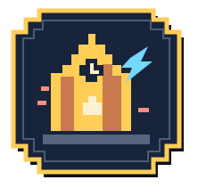
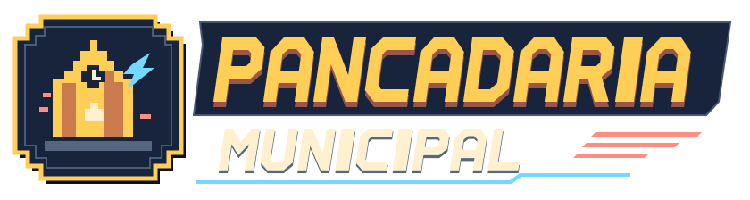

Pancadaria Municipal
Fliperama de praça
Arcade de fim dos anos 80, com sotaque de cada cidade.
Logo e símbolo
A torre remete à Matriz de Pato Branco. O raio e as linhas de movimento trazem o combate para a marca. Use o letreiro na abertura sobre Noite ou Gabinete, com pelo menos 300 px de largura. Abaixo disso, use o selo, com pelo menos 24 px.
Noite de praça
#101827Fundo principal#18243BPainéis e fichas#667C99Bordas e divisórias#FFF1D0Texto principal#FFCE57Ação e tempo#74D8FFIdentifica o jogador#FF8E80Identifica a CPUMarfim para o texto principal e cinza-claro #BAC8DD para apoio. Botão amarelo com texto Noite. Azul e coral aparecem acompanhados de P1 e CPU.
Duas vozes
seu lutador
Títulos, cronômetro e chamadas curtas. 32–48 px em títulos e 16–24 px em chamadas.
Superfaturado
Menus, perfis, botões e instruções. 16 px para texto e controles, 14 px para apoio.
Peças do jogo
Grade 3 × 3. A borda e o rótulo mostram quem foi escolhido. A ficha mantém o nome e os golpes visíveis.
Vida nas pontas, tempo no centro e estado do especial abaixo. Durante a luta, os efeitos de impacto ficam na arena.
Espaçamento em múltiplos de 4 px. Molduras recortadas em passos de 8 px. Resposta de foco em 120 ms e confirmação em 180 ms. Com movimento reduzido, a troca visual é imediata.
Da cidade para a arena
Silhueta primeiro
Retrato fechado na grade, pose de corpo inteiro na ficha e animações em pixel art na luta. Roupa, postura e adereço devem identificar o personagem à distância. Preparação, contato e recuperação são poses distintas.
O lugar tem que aparecer
Um ponto reconhecível por cenário, como a fachada e a torre da Matriz. Separe fundo, arquitetura e piso de luta. Deixe contraste e detalhes mais fortes para os lutadores e seus golpes.